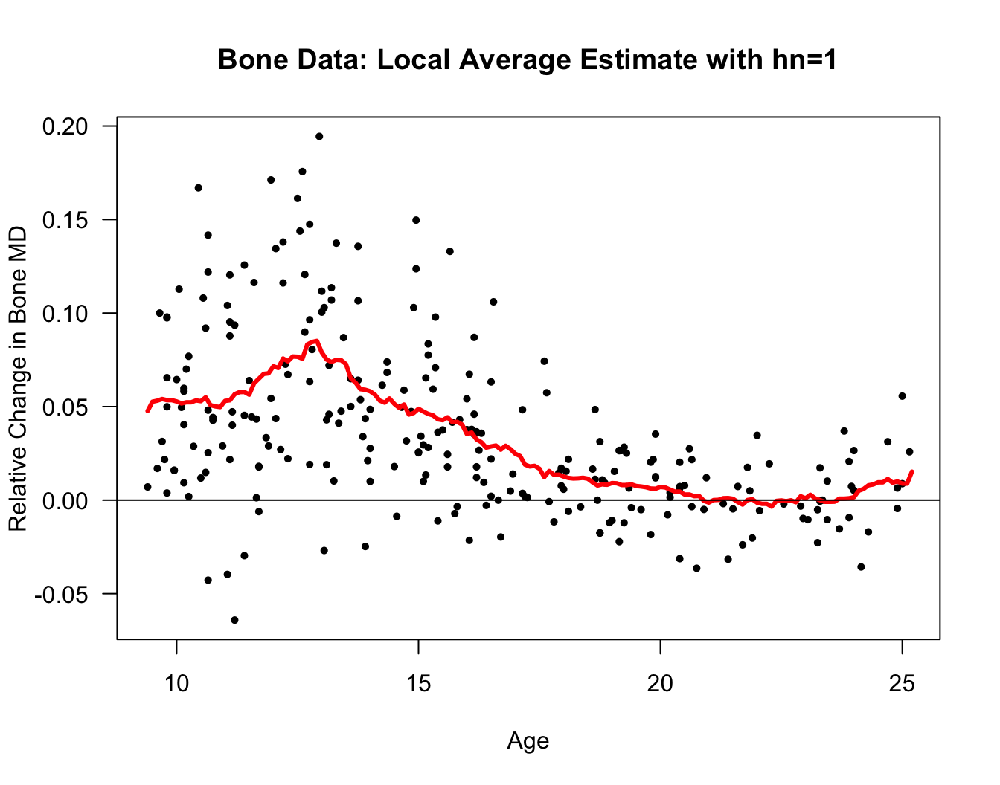
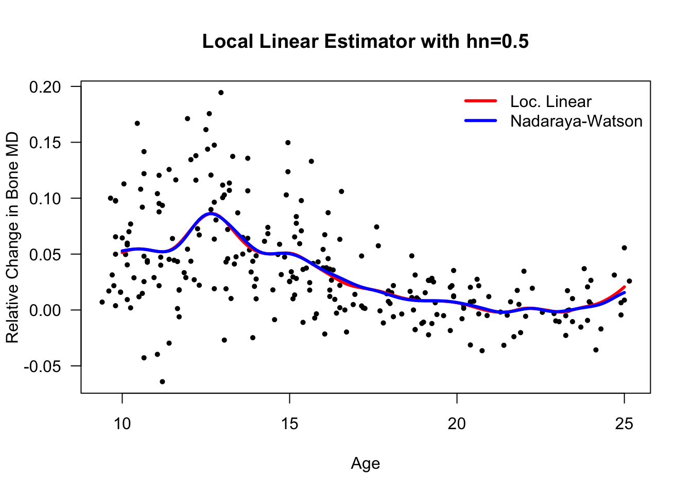

Chapter 11 Kernel Regression and Local Regression
11.1 Introduction
In regression we are interested in characterizing, in some way, the relationship between a collection of responses \(Y_{1},\ldots,Y_{n}\) and covariate vectors \((\mathbf{x}_{1}, \ldots, \mathbf{x}_{n})\).
Linear regression is one way of approaching this problem. This assumes the expectation of \(Y_{i}\) can be expressed as a linear combination of the covariates: \[\begin{equation} E(Y_{i}| \mathbf{x}_{i}) = \beta_{0} + \sum_{j=1}^{p} x_{ij}\beta_{j} \nonumber \end{equation}\]
- More generally, we can consider the following model
\[\begin{equation}
Y_{i} = m( \mathbf{x}_{i} ) + \varepsilon_{i} \nonumber
\end{equation}\]
- \(m(\mathbf{x}_{i})\) - the “mean function” or “regression function”
- \(\mathbf{x}_{i} = (x_{i1}, \ldots, x_{ip})\) - the \(i^{th}\) covariate vector
The residuals \(\varepsilon_{1}, \ldots, \varepsilon_{n}\) are assumed to be i.i.d. and have mean zero.
In a nonparametric approach, we will try to estimate \(m(\mathbf{x})\) without making any strong assumptions about the form of \(m( \mathbf{x} )\).
The regression function \(m(\mathbf{x})\) can be thought of as the function which returns the expectation of \(Y_{i}\) given that \(\mathbf{x}_{i} = \mathbf{x}\) \[\begin{equation} m(\mathbf{x} ) = E(Y_{i}|\mathbf{x}_{i}=\mathbf{x}) \end{equation}\]
- Let
- \(f_{Y|X}(y|\mathbf{x})\) denote the conditional density of \(Y_{i}\) given \(\mathbf{x}_{i}\).
- \(f_{Y,X}(y, \mathbf{x})\) denote the joint density of \((Y_{i}, \mathbf{x}_{i})\)
- \(f_{X}(\mathbf{x})\) denote the density of \(\mathbf{x}_{i}\)
We can express the regression function as \[\begin{equation} m(\mathbf{x}) = \int_{-\infty}^{\infty} y f_{Y|X}(y|\mathbf{x}) dy = \frac{\int y f_{Y,X}(y, \mathbf{x}) dy}{ f_{X}(\mathbf{x}) } \nonumber \end{equation}\]
11.2 Kernel Regression
- In this section, we will assume that the covariates are univariate. That is, \(p=1\) and \(\mathbf{x}_{i} = x_{i}\) where \(x_{i}\) is a real number.
11.2.1 The Regressogram
The regressogram is an estimate of the mean function \(m(x)\) which is has many similarities in its construction to the histogram.
Similar to how we constructed the histogram, let us think about an estimate \(m(x)\) that will be constant within each of a series of bins \(B_{1}, \ldots, B_{D_{n}}\) \[\begin{eqnarray} B_{1} &=& [ x_{0}, x_{0} + h_{n}) \nonumber \\ B_{2} &=& [x_{0} + h_{n}, x_{0} + 2h_{n}) \nonumber \\ &\vdots& \nonumber \\ B_{D_{n}} &=& [x_{0} + (D_{n} - 1)h_{n}, x_{0} + D_{n}h_{n}) \nonumber \end{eqnarray}\]
Suppose we want to estimate \(m(x)\), where \(x\) belongs to the \(k^{th}\) bin. A direct estimate of this is the average of the \(Y_{i}'s\) among those \(x_{i}'s\) which fall into the \(k^{th}\) bin.
Specifically, if \(x \in B_{k}\), then we estimate \(m(x)\) with \[\begin{equation} \hat{m}_{h_{n}}^{R}(x) = \frac{ \sum_{i=1}^{n} Y_{i} I\big( x_{i} \in B_{k} \big) }{ \sum_{i=1}^{n} I\big( x_{i} \in B_{k} \big) } = \frac{1}{n_{k,h_{n}}} \sum_{i=1}^{n} Y_{i} I\big( x_{i} \in B_{k} \big), \nonumber \end{equation}\] where \(n_{k,h_{n}}\) is the number of \(x_{i}\) that fall into the \(k^{th}\) bin when using bin width \(h_{n}\).
The estimate \(\hat{m}_{h_{n}}^{R}(x)\) of the regression function is called the regressogram.
The intuition for this estimate is: if \(x \in B_{k}\), then taking an average of the reponses for \(x_{i}\) in a small bin containing \(x\) should give us a reasonable approximation for the expectation of \(Y_{i}\) given that \(x_{i} = x\).
Another way of looking at the regressogram is to note that if we think of the \(x_{i}\) as random variables, then for \(x \in B_{k}\) \[\begin{eqnarray} E\Big\{ \frac{1}{n} \sum_{i=1}^{n} Y_{i} I\big( x_{i} \in B_{k} \big) \Big\} &=& E\Big\{ Y_{1} I\big( x_{1} \in B_{k} \big) \Big\} \nonumber \\ &=& \int_{-\infty}^{\infty} \int_{x_{0} + (k-1)h_{n}}^{x_{0} + kh_{n}} y f_{Y,X}(y, t) dt dy \nonumber \\ &\approx& h_{n} \int_{-\infty}^{\infty} y f_{Y,X}(y, x) dy \tag{11.1} \end{eqnarray}\] and, similarly, \[\begin{eqnarray} E\Big\{ \frac{1}{n} \sum_{i=1}^{n} I\big( x_{i} \in B_{k} \big) \Big\} &=& E\Big\{ I\big( x_{1} \in B_{k} \big) \Big\} \nonumber \\ &=& \int_{x_{0} + (k-1)h_{n}}^{x_{0} + kh_{n}} f_{X}(t) dt \nonumber \\ &\approx& h_{n} f_{X}(x) \tag{11.2} \end{eqnarray}\]
Equations (11.1) and (11.2) suggest that \(\hat{m}_{h_{n}}^{R}(x)\) should be a reasonable estimate of the ratio \[\begin{equation} \int_{-\infty}^{\infty} y f_{Y,X}(y, x) dy \big/ f_{X}(x) \nonumber \end{equation}\]

Figure 8.1: Framingham Data. Regressogram estimate for a regression model with diastolic blood pressure as the response and age as the covariate. Ages from 31-71 were separated into bins of width 5 years.
- Exercise 11.1 Let \[\begin{equation} \hat{\mathbf{m}} = \big( \hat{m}_{h_{n}}^{R}(x_{1}), \ldots, \hat{m}_{h_{n}}^{R}(x_{n}) \big) \nonumber \end{equation}\] denote the vector of “fitted values” from a regressogram estimate that has \(D_{n}\) bins. If \(\mathbf{Y} = (Y_{1}, \ldots, Y_{n})\), show that you can express \(\hat{\mathbf{m}}\) as \[\begin{equation} \hat{\mathbf{m}} = \mathbf{A}\mathbf{Y}, \nonumber \end{equation}\] for an appropriately chosen \(n \times n\) matrix \(\mathbf{A}\). What is the value of \(\textrm{tr}(\mathbf{A})\)?
11.2.2 The Local Average Estimator
The regressogram can be thought of as a regression analogue of the histogram.
The local average estimator can be thought of as a regression analogue of the “box-type” density estimator that we described in Chapter 8.
For each point \(x\), we are going to use a regression function estimate which has a bin “centered” at \(x\).
Specifically, for each \(x\), we will form a bin of width \(2h_{n}\) around \(x\) and compute the mean of the \(Y_{i}\) among those observations where the \(x_{i}\) fall into this bin.
In other words, we are computing an average of the \(Y_{i}\) in a small region around \(x\).
The local average estimator \(\hat{m}_{h_{n}}^{loc}(x)\) at \(x\) is defined as: \[\begin{eqnarray} \hat{m}_{h_{n}}^{loc}(x) &=& \frac{ \sum_{i=1}^{n} Y_{i}I\big( x - h_{n} < x_{i} < x + h_{n} \big) }{ \sum_{i=1}^{n} I\big( x - h_{n} < x_{i} < x + h_{n} \big) } \nonumber \\ &=& \frac{1}{n_{h_{n}}(x)} \sum_{i=1}^{n} Y_{i}I\big( x - h_{n} < x_{i} < x + h_{n} \big) \nonumber \end{eqnarray}\] where \(n_{h_{n}}(x) = \sum_{i=1}^{n} I\big( x - h_{n} < x_{i} < x + h_{n} \big)\).
The local average estimator does not need to have a constant value within each of a few pre-specified bins.
We can also express the local average estimator in the following way: \[\begin{equation} \hat{m}_{h_{n}}^{loc}(x) = \frac{\sum_{i=1}^{n} Y_{i} w\Big( \frac{x - X_{i}}{h_{n}} \Big)}{\sum_{i=1}^{n} w\Big( \frac{x - X_{i}}{h_{n}} \Big)}, \tag{11.3} \end{equation}\] where \(w(t)\) is the “box” function defined as \[\begin{equation} w(t) = \begin{cases} \frac{1}{2} & \textrm{ if } |t| < 1 \nonumber \\ 0 & \textrm{ otherwise} \nonumber \end{cases} \end{equation}\]
While a local average estimate will not be a “step function” like the regressogram, the local average estimate will typically be non-smooth and have a jagged appearance.
Like kernel density estimation, there is a bias/variance tradeoff to the choice of \(h_{n}\).
Smaller values of \(h_{n}\) usually imply higher variance because you will be taking an average over a relatively small number of observations.
Larger values of \(h_{n}\) usually imply higher bias because you will be esitmating \(m(x)\) by averaging over a wide range of \(x_{i}\) values, and \(m(x)\) could vary substantially over this range of \(x_{i}\) values.
Our experience in Chapter 8 suggests that we can get a smoother estimate of the regression if we simply replace the “box function” \(w(t)\) in (11.3) with a smoother kernel function \(K(t)\).
Rcode for computing a local average estimate \(\hat{m}_{2}^{loc}(x)\) at the points \(x = 31, 32, 33, ...., 71\) is given below
xseq <- seq(31, 71, by=1)
hn <- 2
nx <- length(xseq)
m.hat.loc <- numeric(nx)
for(k in 1:nx) {
in.bin <- framingham$age > xseq[k] - hn & framingham$age < xseq[k] + hn
m.hat.loc[k] <- mean(framingham$diaBP[in.bin])
}
plot(framingham$age, framingham$diaBP, las=1, ylab="Diastolic Blood Pressure",
xlab="Age", main="Local Average Estimate with hn=2", type="n")
points(framingham$age, framingham$diaBP, pch=16, cex=0.7)
lines(xseq, m.hat.loc, lwd=3, col="red")Let’s also look at a local average estimate of the regression function for the bone mineral density dataset.
The responses in this dataset are relative changes in the bone mineral density of adolescents.
Specifically, reponses \(Y_{i}\) and covariates \(x_{i}\) are defined as \[\begin{eqnarray} Y_{i} &=& \frac{\textrm{Mineral Density at Visit 2}_{i} - \textrm{Mineral Density at Visit 1}_{i}}{\tfrac{1}{2}(\textrm{Mineral Density at Visit 2}_{i} + \textrm{Mineral Density at Visit 1}_{i})} \nonumber \\ x_{i} &=& \frac{1}{2}(\textrm{Age at Visit 2}_{i} + \textrm{Age at Visit 1}_{i}) \nonumber \end{eqnarray}\]
tmp <- read.table("https://web.stanford.edu/~hastie/ElemStatLearn/datasets/bone.data",
header=TRUE)
bonedat <- tmp[!duplicated(tmp$idnum),] ## only keep the first observation of a personxseq <- seq(9.4, 25.2, by=.1)
hn <- 1
nx <- length(xseq)
m.hat.loc <- numeric(nx)
for(k in 1:nx) {
in.bin <- bonedat$age > xseq[k] - hn & bonedat$age < xseq[k] + hn
m.hat.loc[k] <- mean(bonedat$spnbmd[in.bin])
}
plot(bonedat$age, bonedat$spnbmd, las=1, ylab="Relative Change in Bone MD",
xlab="Age", main="Bone Data: Local Average Estimate with hn=1", type="n")
points(bonedat$age, bonedat$spnbmd, pch=16, cex=0.7)
lines(xseq, m.hat.loc, lwd=3, col="red")
abline(0, 0)
11.2.3 k-Nearest Neighbor (k-NN) Regression
k-nearest neighbor regression is fairly similar to the local average estimator of the regression function.
With k-NN, we still estimate the regression function at a particular point by taking a type of local average around this point.
However, k-NN takes the average over the k “nearest observations” to \(x\) rather than taking an average over all the observations which fall into a bin centered at \(x\).
The k-NN estimator of the regression function \(\hat{m}_{k}^{kNN}(x)\) is defined as \[\begin{equation} \hat{m}_{k}^{kNN}(x) = \frac{1}{k}\sum_{i=1}^{n} y_{i} I\big( x_{i} \in N_{k}(x) \big) \nonumber \end{equation}\]
Here, \(N_{k}(x)\) is defined as the set of the k \(x_{i}'s\) which are closest to \(x\). That is, \(N_{k}(x)\) is the set of the k “nearest neighbors” to \(x\).
Mathematically, if we define \[\begin{equation} d_{i}(x) = |x_{i} - x| \nonumber \end{equation}\] and order them so that \(d_{(1)}(x) \leq d_{(2)}(x) \leq \ldots \leq d_{(n)}(x)\). Then, the k nearest neighbors of \(x\) would be those observations which correspond to the \(d_{(1)}(x)\) through \(d_{(k)}(x)\).
- Like the local average estimator, increasing the value of \(k\) will increase the bias of the k-NN regression function estimate while decreasing the value of \(k\) will increase the variance of the k-NN regression function estimate.
- Exercise 8.2 Suppose \(n=6\) and that we have the following covariate values and responses
\[\begin{eqnarray}
(x_{1}, x_{2}, x_{3}, x_{4}, x_{5}, x_{6}) &=& (1/7, 2/7, 3/7, 4/7, 5/7, 6/7) \nonumber \\
(Y_{1}, Y_{2}, Y_{3}, Y_{4}, Y_{5}, Y_{6}) &=& (1.4, 0.7, 1.1, 1.3, 0.9, 1.7) \nonumber
\end{eqnarray}\]
- Compute the local average estimate of the regression function at \(x = 0.25\) and \(x=0.75\) assuming that \(h_{n} = 1/2\).
- Compute the k nearest neighbors estimate of the regression function at \(x = 0.25\) and \(x = 0.75\) assuming that \(k = 2\).
11.2.4 The Nadaraya-Watson Estimator
The Nadaraya-Watson estimator \(\hat{m}_{h_{n}}^{NW}\) of the regression function with bandwidth \(h_{n}\) is defined as \[\begin{equation} \hat{m}_{h_{n}}^{NW}(x) = \frac{ \sum_{i=1}^{n} Y_{i}K\Big( \frac{x - x_{i}}{ h_{n} }\Big) }{ \sum_{i=1}^{n} K\Big( \frac{x - x_{i}}{ h_{n} }\Big) } \nonumber \end{equation}\]
The Nadaraya-Watson estimator has the same basic form as the local average estimator. We have just replaced the “box” function \(w(t)\) with the kernel function \(K(t)\).
You can think of \(\hat{m}_{h_{n}}^{NW}(x)\) as a weighted average of the \(Y_{i}\). That is, \[\begin{equation} \hat{m}_{h_{n}}^{NW}(x) = \sum_{i=1}^{n} a_{i}(x) Y_{i} \nonumber \end{equation}\]
The bandwidth \(h_{n}\) can also be referred to as the “smoothing parameter” since its value affects how smooth the fitted regression curve appears.
The weights \(a_{1}(x), \ldots, a_{n}(x)\), in this case, are defined as \[\begin{equation} a_{i}(x) = \frac{ K(\tfrac{x - x_{i}}{h_{n}})}{ \sum_{i=1}^{n} K(\tfrac{x - x_{i}}{ h_{n}}) } \nonumber \end{equation}\] So, we are using weights which are larger the closer you are to \(x\).
The Nadaraya-Watson estimator suffers from two main drawbacks. These are design bias and boundary bias.
Design bias refers to the effect of the spacing of the \(x_{i}\) on the performance of the Nadaraya-Watson estimator.
Boundary bias refers to the performance of the Nadaraya-Watson estimator near the smallest and largest \(x_{i}\).
If we assume that the \(x_{i}\) are random and have probability density \(f_{X}(x)\), then it can be shown that the mean-squared error of the Nadaraya-Watson estimator at a particular point \(x\) has the following approximation \[\begin{eqnarray} \textrm{MSE}(x) &=& E\Big[ \{ m(x) - \hat{m}_{h_{n}}^{NW}(x) \}^{2} \Big] \nonumber \\ &\approx& \frac{h_{n}^{4}\mu_{2}^{2}(K)}{4}\Bigg\{ m''(x) + \frac{2m'(x)f_{X}'(x)}{f_{X}(x)} \Bigg\}^{2} + \frac{\sigma^{2}}{n h_{n} f_{X}(x) }, \nonumber \end{eqnarray}\] where \(\mu_{2}(K) = \int_{-\infty}^{\infty} u^{2} K(u) du\) and \(\kappa_{2}(K) = \int_{-\infty}^{\infty} K^{2}(u) du\).
The term \(2m'(x)f_{X}'(x)/f_{X}(x)\) is referred to as the design bias. Notice that this should be zero if the \(x_{i}\) are drawn from a Uniform distribution. In other words, if the \(x_{i}\) are roughly equally spaced, then the design bias should be small.
The Nadaraya-Watson estimator in R
- The Nadaraya-Watson estimator can be computed in
Rwith theksmoothfunction.
x- vector of covariate valuesy- vector of responseskernel- choice of kernel function; default isbox; usenormalif you want a Gaussian kernelbandwidth- value of the bandwidth; default is \(0.5\)x.points- points at which to estimate the regression function; default is to use \(n\) equally spaced points.
The
xvector from the fittedksmoothobject will be the vector of points at which the regression function is estimated. Theyvector from the fittedksmoothobject will be a vector containing the estimated values of the regression function.Note that the bandwidth used by this function for the Gaussian kernel is approximately \(2.7\) times smaller than the bandwith in our definition of the Gaussian kernel.
- If you wanted to write your own function that computed the Nadaraya-Watson estimate at a vector of desired points \(x.points = (t_{1}, \ldots, t_{q})\), you could use something like
MyNWEst <- function(x, y, bandwidth, x.points) {
q <- length(x.points)
nw.est <- numeric(q)
for(k in 1:q) {
ww <- dnorm(x.points[k], mean=x, sd=bandwidth)
nw.est[k] <- sum(ww*y)/sum(ww)
}
return(nw.est)
}- To compute the Nadraya-Watson estimate at a set of equally spaced of points from \(10\) to \(25\) using bandwidth \(0.5\) and plot the result, you could use the following code:
xseq <- seq(10, 25, by=.1)
bone.nwest <- ksmooth(x=bonedat$age, y=bonedat$spnbmd, kernel="normal",
bandwidth=2.7*0.5, x.points=xseq)
plot(bonedat$age, bonedat$spnbmd, las=1, ylab="Relative Change in Bone MD",
xlab="Age", main="Bone Data: Nadaraya-Watson Estimate with hn=0.5 and
Gaussian Kernel", type="n")
points(bonedat$age, bonedat$spnbmd, pch=16, cex=0.7)
lines(bone.nwest$x, bone.nwest$y, lwd=3, col="red")11.3 Local Linear Regression
11.3.1 Definition
You can think of both the regressogram and the local average as methods which fit local intercept models.
For the regressogram, we fit an intercept model (that is a flat line curve) within a small bin that contains \(x\).
For the local average estimator, we fit an intercept model for a small bin around \(x\).
The Nadaraya-Watson estimator can be thought of as just smoothing out the local intercept approach of the local average estimator.
Instead of fitting local intercept models, we could fit local linear models that have an intercept and a slope term.
To be specific, suppose we estimated the regression function at \(x\) by fitting a linear model using only data from the \(x_{i}\) that fell into the bin \((x - h_{n}, x + h_{n})\).
In this case, we would first fit the linear model \(\hat{s}_{x}(x_{i}) = \hat{\beta}_{0x} + \hat{\beta}_{1x}(x_{i} - x)\) where \(\hat{\beta}_{0x}\), \(\hat{\beta}_{1x}\) solved the following local least-squares problem \[\begin{equation} \hat{\beta}_{0x}, \hat{\beta}_{1x} \textrm{ minimize: } \quad \sum_{i=1}^{n}\{ Y_{i} - \beta_{0x} - \beta_{1x}(x_{i} - x) \}^{2}I\big( x - h_{n} < x_{i} < x + h_{n} \big) \tag{11.4} \end{equation}\]
Then, we would estimate \(m(x)\) by using the value of \(\hat{s}_{x}(\cdot)\) at \(x\). That is, \(\hat{s}_{x}(x) = \hat{\beta}_{0x}\).
Local Linear Regression uses the same idea as (11.4), but replaces the indicator function \(I( x - h_{n} < x_{i} < x + h_{n})\) with a smooth kernel function.
So, the local linear regression estimate of the regression function at \(x\) is \[\begin{eqnarray} \hat{m}_{h_{n}}^{loclin}(x) &=& \hat{\beta}_{0x} \quad \textrm{ where } \nonumber \\ \hat{\beta}_{0x}, \hat{\beta}_{1x} &=& \textrm{argmin}_{\beta_{0x},\beta_{1x}} \sum_{i=1}^{n}\{ Y_{i} - \beta_{0x} - \beta_{1x}(x_{i} - x) \}^{2}K\Big( \frac{x - x_{i}}{h_{n}} \Big) \nonumber \end{eqnarray}\]
- Exercise 8.3 Suppose we define an estimator \(\tilde{m}_{h_{n}}(x)\) of the regression function as \[\begin{eqnarray} \tilde{m}_{h_{n}}(x) &=& \hat{\beta}_{0x} \quad \textrm{ where } \nonumber \\ \hat{\beta}_{0x} &=& \textrm{argmin}_{\beta_{0x}} \sum_{i=1}^{n}\{ Y_{i} - \beta_{0x} \}^{2}K\Big( \frac{x - x_{i}}{h_{n}} \Big) \nonumber \end{eqnarray}\] Show that \(\tilde{m}_{h_{n}}(x) = \hat{m}_{h_{n}}^{NW}(x)\).
11.3.2 Advantages of the Local Linear Estimator
The local linear regression estimator can reduce the effects of design and boundary bias.
If we write the local linear estimate at the point \(x\) as \(\hat{m}_{h_{n}}^{loclin}(x) = \sum_{i=1}^{n} a_{i}^{h_{n}}(x)Y_{i}\), then the bias is appoximately \[\begin{equation} E\{ \hat{m}_{h_{n}}^{loclin}(x) \} - m(x) \approx m'(x)\sum_{i=1}^{n} (x_{i} - x)a_{i}^{h_{n}}(x) + \frac{m''(x)}{2}\sum_{i=1}^{n} (x_{i} - x)^{2}a_{i}^{h_{n}}(x) \nonumber \end{equation}\]
For local linear regression, the term \(m'(x)\sum_{i=1}^{n} (x_{i} - x)a_{i}^{h_{n}}(x)\) equals zero. If the weights \(a_{i}^{h_{n}}(x)\) were the weights from the Nadaraya-Watson estimator, this term would not necessarily equal zero.
Also, the local linear estimator can help to reduce the boundary bias that arises from asymmetry near the boundary (draw a picture).
11.3.3 An Example in R
- An
Rfunction which implements local linear regression is the following. The input for this function has the same structure as our earlier Nadaraya-WatsonRfunction.
MyLocLinear <- function(x, y, bandwidth, x.points) {
q <- length(x.points)
loclin.est <- numeric(q)
for(k in 1:q) {
## First create weights with Gaussian kernel
xtmp <- x - x.points[k]
ww <- dnorm(xtmp, mean=0, sd=bandwidth)
## Now, compute the intercept with a weighted linear regression
loclin.est[k] <- lm(y ~ xtmp, weights=ww)$coef[1]
}
return(loclin.est)
}Let’s try this function with the
bonedatdataset again.Using age as the covariate, we will estimate the regression function at the points \(10, 10.1, 10.2, ..., 25\):
xseq <- seq(10, 25, by=.1)
bone.loclin <- MyLocLinear(x=bonedat$age, y=bonedat$spnbmd,
bandwidth=0.5, x.points=xseq)
plot(bonedat$age, bonedat$spnbmd, las=1, ylab="Relative Change in Bone MD",
xlab="Age", main="Local Linear Estimator with hn=0.5", type="n")
points(bonedat$age, bonedat$spnbmd, pch=16, cex=0.7)
lines(xseq, bone.loclin, lwd=3, col="red")- Let’s compare this with the Nadaraya-Watson esitmate that we computed earlier 
11.3.4 Local Polynomial Regression
There is no reason why we must restrict ourselves to local linear fits. We could also fit local polynomial models.
Similar to the way we approached local linear regression, for a fixed \(x\) we will fit the local model \[\begin{equation} \hat{s}_{x}^{p}(x_{i}) = \hat{\beta}_{0x,p} + \hat{\beta}_{1x,p}(x_{i} - x) + \hat{\beta}_{2x,p}(x_{i} - x)^{2} + \ldots + \beta_{px,p}(x_{i} - x)^{p}, \nonumber \end{equation}\] where the estimated regression coefficients \(\hat{\beta}_{0x,p}, \hat{\beta}_{1x,p}, \ldots, \hat{\beta}_{px,p}\) are found by solving the least-squares problem \[\begin{equation} \sum_{i=1}^{n}\{ Y_{i} - \beta_{0x,p} - \beta_{1x,p}(x_{i} - x) - \ldots - \beta_{px,p}(x_{i} - x)^{p} \}^{2}K\Big( \frac{x - x_{i}}{h_{n}} \Big) \end{equation}\]
Then, we estimate the regression function at \(x\) with \(\hat{m}_{h_{n}}^{locpoly}(x) = \hat{s}_{x}^{p}(x) = \hat{\beta}_{0x,p}\).
Note that the local linear regression estimate is just a special case of local polynomial regression with \(p=1\).
To find the estimates of \(\beta_{0x,p}\) for linear and polynomial regression, you can use the formulas for the regression coefficient estimates in weighted least squares.
Define the \(n \times n\) diagonal matrix of weights \(\mathbf{W}_{x, h_{n}}\) as \[\begin{equation} \mathbf{W}_{x, h_{n}} = \begin{bmatrix} K\Big( \frac{x - x_{1}}{h_{n}} \Big) & 0 & \ldots & 0 \\ 0 & K\Big( \frac{x - x_{2}}{h_{n}} \Big) & \ldots & 0 \\ \vdots & \vdots & \ddots & \vdots \\ 0 & 0 & \ldots & K\Big( \frac{x - x_{n}}{h_{n}} \Big) \end{bmatrix} \nonumber \end{equation}\] and define the \(n \times (p+1)\) matrix \(\mathbf{X}_{x,p}\) as \[\begin{equation} \mathbf{X}_{x, p} = \begin{bmatrix} 1 & (x_{1} - x) & \ldots & (x_{1} - x)^{p} \\ 1 & (x_{2} - x) & \ldots & (x_{2} - x)^{p} \\ \vdots & \vdots & & \vdots \\ 1 & (x_{n} - x) & \ldots & (x_{n} - x)^{p} \end{bmatrix} \nonumber \end{equation}\]
The vector of estimated regression coefficients is obtained from the following formula \[\begin{equation} \begin{bmatrix} \hat{\beta}_{0x,p} \\ \hat{\beta}_{1x,p} \\ \ldots \\ \hat{\beta}_{px,p} \end{bmatrix} = (\mathbf{X}_{x,p}^{T}\mathbf{W}_{x,h_{n}}\mathbf{X}_{x,p})^{-1}\mathbf{X}_{x,p}^{T}\mathbf{W}_{x,h_{n}}\mathbf{Y} \nonumber \end{equation}\]
While using local polynomial regression with higher order polynomials offer more flexibility, they come at the price of more variance.
For fixed \(h_{n}\), increasing the degree \(p\) can decrease bias but will increase variance.
In practice, \(p = 1\) or \(p = 2\) seems to be most common in practice. There is often not much benefit to using a degree of \(3\) or more.
11.4 Selecting the Bandwidth/Smoothing Parameter
11.4.1 Representing in Linear Form
Let \(\mathbf{Y} = (Y_{1}, \ldots, Y_{n})\) and let \(\hat{\mathbf{m}} = (\hat{m}(x_{1}), \ldots, \hat{m}(x_{n}))\) denote the vector of “fitted values” from a vector of estimates of the regression function at \(x_{1}, \ldots, x_{n}\).
You can represent the fitted values all of the nonparametric estimators discussed thus far as \[\begin{equation} \hat{\mathbf{m}} = \mathbf{A}_{h_{n}}\mathbf{Y} \nonumber \end{equation}\] for an appropriately chosen \(n \times n\) matrix \(\mathbf{A}_{h_{n}}\).
For the local average estimator, we have \(\hat{\mathbf{m}} = \mathbf{A}_{h_{n}}\mathbf{Y}\) where \(\mathbf{A}_{h_{n}}\) is defined as \[\begin{equation} \mathbf{A}_{h_{n}} = \begin{bmatrix} \frac{1}{n_{h_{n}}(x_{1})}I(x_{1} - h_{n} < x_{1} < x_{1} + h_{n}) & \ldots & \frac{1}{n_{h_{n}}(x_{1})}I(x_{1} - h_{n} < x_{n} < x_{1} + h_{n}) \\ \frac{1}{n_{h_{n}}(x_{2})}I(x_{2} - h_{n} < x_{1} < x_{2} + h_{n}) & \ldots & \frac{1}{n_{h_{n}}(x_{2})}I(x_{2} - h_{n} < x_{n} < x_{2} + h_{n}) \\ \vdots & \ddots & \vdots \\ \frac{1}{n_{h_{n}}(x_{n})}I(x_{n} - h_{n} < x_{1} < x_{n} + h_{n}) & \ldots & \frac{1}{n_{h_{n}}(x_{n})}I(x_{n} - h_{n} < x_{n} < x_{n} + h_{n}) \end{bmatrix} \end{equation}\] where \(n_{h_{n}}(x) = \sum_{i=1}^{n}I(x - h_{n} < x_{i} < x + h_{n})\).
In other words, the \((i,j)\) element of \(\mathbf{A}_{h_{n}}\) is \(a_{j}(x_{i})\) where \[\begin{equation} a_{j}(x_{i}) = \frac{1}{n_{h_{n}}(x_{i})}I(x_{i} - h_{n} < x_{j} < x_{i} + h_{n}) \nonumber \end{equation}\]
- For the Nadaraya-Watson estimator, the \(\mathbf{A}_{h_{n}}\) matrix is \[\begin{equation} \mathbf{A}_{h_{n}} = \begin{bmatrix} \frac{1}{K_{h_{n}}(x_{1}, \cdot) }K(0) & \frac{1}{K_{h_{n}}(x_{1}, \cdot) }K(\tfrac{x_{2} - x_{1}}{h_{n}}) & \ldots & \frac{1}{K_{h_{n}}(x_{1}, \cdot) }K(\tfrac{x_{n} - x_{1}}{h_{n}}) \\ \frac{1}{K_{h_{n}}(x_{2}, \cdot) }K(\tfrac{x_{1} - x_{2}}{h_{n}}) & \frac{1}{K_{h_{n}}(x_{2}, \cdot) }K(0) & \ldots & \frac{1}{K_{h_{n}}(x_{2}, \cdot) }K(\tfrac{x_{n} - x_{2}}{h_{n}}) \\ \vdots & \vdots & \ddots & \vdots \\ \frac{1}{K_{h_{n}}(x_{n}, \cdot) }K(\tfrac{x_{1}-x_{n}}{h_{n}}) & \frac{1}{K_{h_{n}}(x_{n}, \cdot) }K(\tfrac{x_{2} - x_{n}}{h_{n}}) & \ldots & \frac{1}{K_{h_{n}}(x_{n}, \cdot) }K(0) \end{bmatrix} \nonumber \end{equation}\] where \[\begin{equation} K_{h_{n}}(x_{i}, \cdot) = \sum_{j=1}^{n}K\Big( \frac{x_{i} - x_{j}}{h_{n}} \Big) \nonumber \end{equation}\]
- For the local linear regression estimator, the \(i^{th}\) row of \(\mathbf{A}_{h_{n}}\) equals the first row of the following \(2 \times n\) matrix: \[\begin{equation} (\mathbf{X}_{x_{i},1}^{T}\mathbf{W}_{x_{i},h_{n}}\mathbf{X}_{x_{i},1})^{-1}\mathbf{X}_{x_{i},1}^{T}\mathbf{W}_{x_{i},h_{n}} \nonumber \end{equation}\] Here, \(\mathbf{X}_{x,1}\) and \(\mathbf{W}_{x, h_{n}}\) are as defined in the section on local linear regression.
In “classic” linear regression where you would try to fit the straight line model \(Y_{i} = \beta_{0} + \beta_{1}x_{i} + \varepsilon_{i}\), the vector of fitted values would be \[\begin{equation} \hat{\mathbf{m}} = (\hat{m}(x_{1}), \ldots, \hat{m}(x_{n})) = (\hat{\beta}_{0} + \hat{\beta}_{1}x_{1}, \ldots, \hat{\beta}_{0} + \hat{\beta}_{1}x_{n}) \nonumber \end{equation}\]
In this case, you can represent \(\hat{\mathbf{m}}\) as \[\begin{equation} \hat{\mathbf{m}} = \mathbf{X}(\mathbf{X}^{T}\mathbf{X})^{-1}\mathbf{X}^{T}\mathbf{Y} \nonumber \end{equation}\] where \(\mathbf{X}\) is the following \(n \times 2\) “design” matrix \[\begin{equation} \mathbf{X} = \begin{bmatrix} 1 & x_{1} \\ 1 & x_{2} \\ \vdots & \vdots \\ 1 & x_{n} \end{bmatrix} \nonumber \end{equation}\]
11.4.2 The Cp Statistic
Theorem: If a random vector \(\mathbf{Z}\) has mean vector \(\mathbf{\mu}\) and covariance matrix \(\mathbf{\Sigma}\), then \[\begin{equation} E\{ \mathbf{Z}^{T}\mathbf{Z} \} = E\Big\{ \sum_{i=1}^{n} Z_{i}^{2} \Big\} = \mathbf{\mu}^{T}\mathbf{\mu} + \textrm{tr}( \mathbf{\Sigma} ) \nonumber \end{equation}\]
Notice that the vector \(\mathbf{m} - \mathbf{A}_{h_{n}}\mathbf{Y}\) has \[\begin{equation} E( \mathbf{m} - \mathbf{A}_{h_{n}}\mathbf{Y} ) = (\mathbf{I} - \mathbf{A}_{h_{n}})\mathbf{m} \qquad \qquad \textrm{Var}(\mathbf{m} - \mathbf{A}_{h_{n}}\mathbf{Y}) = \sigma^{2}\mathbf{A}_{h_{n}}\mathbf{A}_{h_{n}}^{T} \nonumber \end{equation}\]
Also, the vector \(\mathbf{Y} - \mathbf{A}_{h_{n}}\mathbf{Y} = (\mathbf{I} - \mathbf{A}_{h_{n}})\mathbf{Y}\) has \[\begin{equation} E\{ (\mathbf{I} - \mathbf{A}_{h_{n}})\mathbf{Y} \} = (\mathbf{I} - \mathbf{A}_{h_{n}})\mathbf{m} \qquad \qquad \textrm{Var}\{ (\mathbf{I} - \mathbf{A}_{h_{n}})\mathbf{Y}) = \sigma^{2} (\mathbf{I} - \mathbf{A}_{h_{n}})(\mathbf{I} - \mathbf{A}_{h_{n}})^{T} \nonumber \end{equation}\]
Ideally, we would like to choose the smoothing parameter \(h_{n}\) to minimize the following mean averaged squared error \[\begin{eqnarray} \textrm{MASE}(h_{n}) &=& \frac{1}{n}\sum_{i=1}^{n} E\Big[ \{ m(x_{i}) - \hat{m}(x_{i}) \}^{2} \Big] \nonumber \\ &=& E\{ \frac{1}{n}[\mathbf{m} - \mathbf{A}_{h_{n}}\mathbf{Y}]^{T}[\mathbf{m} - \mathbf{A}_{h_{n}}\mathbf{Y}] \} \nonumber \end{eqnarray}\]
If we apply the above Theorem to the vector \(\mathbf{m} - \mathbf{A}_{h_{n}}\mathbf{Y}\), we can notice that \[\begin{eqnarray} \textrm{MASE}( h_{n} ) &=& E\{ \frac{1}{n}( \mathbf{m} - \mathbf{A}_{h_{n}}\mathbf{Y} )^{T}(\mathbf{m} - \mathbf{A}_{h_{n}}\mathbf{Y}) \} \nonumber \\ &=& \frac{1}{n}[(\mathbf{I} - \mathbf{A}_{h_{n}})\mathbf{m}]^{T}[(\mathbf{I} - \mathbf{A}_{h_{n}})\mathbf{m}] + \frac{\sigma^{2}}{n}\textrm{tr}(\mathbf{A}_{h_{n}}\mathbf{A}_{h_{n}}^{T}) \end{eqnarray}\]
Now, using the mean and covariance matrix for \((\mathbf{I} - \mathbf{A}_{h_{n}})\mathbf{Y}\), we also have that \[\begin{eqnarray} && E\{\frac{1}{n}[(\mathbf{I} - \mathbf{A}_{h_{n}})\mathbf{Y}]^{T}[(\mathbf{I} - \mathbf{A}_{h_{n}})\mathbf{Y}] \} \nonumber \\ &=& \frac{1}{n}[(\mathbf{I} - \mathbf{A}_{h_{n}})\mathbf{m}]^{T}[(\mathbf{I} - \mathbf{A}_{h_{n}})\mathbf{m}] + \frac{\sigma^{2}}{n}\textrm{tr}\{ (\mathbf{I} - \mathbf{A}_{h_{n}})(\mathbf{I} - \mathbf{A}_{h_{n}})^{T} \} \nonumber \\ &=& \textrm{MASE}(h_{n}) + \sigma^{2} - \frac{2\sigma^{2}}{n}\textrm{tr}( \mathbf{A}_{h_{n}}) \end{eqnarray}\]
So, if \(\sigma^{2}\) is known, then \(\widehat{\textrm{MASE}}( h_{n} )\) is an unbiased estimate of \(\textrm{MASE}( h_{n} )\) \[\begin{eqnarray} \widehat{\textrm{MASE}}( h_{n} ) &=& \frac{1}{n}[(\mathbf{I} - \mathbf{A}_{h_{n}})\mathbf{Y}]^{T}[(\mathbf{I} - \mathbf{A}_{h_{n}})\mathbf{Y}] - \sigma^{2} + \frac{2\sigma^{2}}{n}\textrm{tr}( \mathbf{A}_{h_{n}}) \nonumber \\ &=& \frac{1}{n}\sum_{i=1}^{n} \{ Y_{i} - \hat{m}_{h_{n}}(x_{i}) \}^{2} - \sigma^{2} + \frac{2\sigma^{2}}{n}\textrm{tr}( \mathbf{A}_{h_{n}}) \nonumber \end{eqnarray}\]
The predictive mean averaged squared error (PMASE) is defined as \[\begin{equation} \textrm{PMASE}(h_{n}) = E\Big[ \frac{1}{n} \sum_{i=1}^{n} \{ Y_{i}' - \hat{m}_{h_{n}}(x_{i}) \}^{2} \Big] \end{equation}\] where \(Y_{i}'\) is a “future” independent observation that has the same covariate as \(Y_{i}\).
We assume that \(Y_{i}' = m(x_{i}) + \varepsilon_{i}'\) where \(\varepsilon_{i}'\) is independent of \(\varepsilon_{i}\).
So, \[\begin{eqnarray} \textrm{PMASE}(h_{n}) &=& E\Big[ \frac{1}{n} \sum_{i=1}^{n} \{ m(x_{i}) - \hat{m}_{h_{n}}(x_{i}) + \varepsilon_{i}' \}^{2} \Big] \nonumber \\ &=& E\Big[ \frac{1}{n} \sum_{i=1}^{n} \{ m(x_{i}) - \hat{m}_{h_{n}}(x_{i}) \}^{2} \Big] + E\Big[ \frac{1}{n} \sum_{i=1}^{n} (\varepsilon_{i}')^{2} \Big] \nonumber \\ &=& \textrm{PMASE}( h_{n} ) + \sigma^{2} \nonumber \end{eqnarray}\]
The \(C_{p}\) statistic is based on the idea that, if \(\sigma^{2}\) was known, then the following quantity would be an unbiased estimate of \(\textrm{PMASE}( h_{n} )\): \[\begin{equation} \frac{1}{n}\sum_{i=1}^{n} \{ Y_{i} - \hat{m}_{h_{n}}(x_{i}) \}^{2} + \frac{2\sigma^{2}}{n}\textrm{tr}( \mathbf{A}_{h_{n}}) \nonumber \end{equation}\]
The \(C_{p}\) statistic formula is obtained by plugging in an estimate \(\hat{\sigma}^{2}\) of the residual variance into the above formula: \[\begin{equation} C_{p}(h_{n}) = \frac{1}{n}\sum_{i=1}^{n} \{ Y_{i} - \hat{m}_{h_{n}}(x_{i}) \}^{2} + \frac{2\hat{\sigma}^{2}}{n}\textrm{tr}( \mathbf{A}_{h_{n}}) \nonumber \end{equation}\]
The reason this is called the “\(C_{p}\) statistic” is that in the case of a linear regression model with \(p\) columns in the design matrix, we have \(\hat{\mathbf{m}} = \mathbf{X}(\mathbf{X}^{T}\mathbf{X})^{-1}\mathbf{X}^{T}\mathbf{Y}\) and \(\textrm{tr}\{ \mathbf{X}(\mathbf{X}^{T}\mathbf{X})^{-1}\mathbf{X}^{T} \} = p\) so an estimator of the PMASE would be \[\begin{equation} C_{p} = \frac{1}{n}\sum_{i=1}^{n}\{ Y_{i} - \hat{m}_{h_{n}}(x_{i}) \}^{2} + \frac{2\hat{\sigma}^{2}}{n}p \nonumber \end{equation}\]
For this reason, \(\textrm{tr}( \mathbf{A}_{h_{n}} )\) is often referred to as the “degrees of freedom” of a nonparametric estimator of the form \(\hat{\mathbf{m}} = \mathbf{A}_{h_{n}}\mathbf{Y}\).
The main drawback of the \(C_{p}\) statistic is that it requires an estimate of the residual variance \(\sigma^{2}\).
So, if we choose a fairly small bandwidth \(\tilde{h}_{n}\) so that the bias is close to zero, we could use the following estimate of \(\sigma^{2}\) \[\begin{equation} \hat{\sigma}^{2}( \tilde{h}_{n} ) = \frac{ \sum_{i=1}^{n}\{ Y_{i} - \hat{m}_{\tilde{h}_{n}}(x_{i}) \}^{2} }{ n - 2\textrm{tr}(\mathbf{A}_{\tilde{h}_{n}}) + \textrm{tr}(\mathbf{A}_{\tilde{h}_{n}}\mathbf{A}_{\tilde{h_{n}}}^{T}) } \nonumber \end{equation}\]
- Exercise 8.4 Suppose the \(n \times n\) matrix \(\mathbf{A}_{h_{n}}\) satifies \(\mathbf{A}_{h_{n}}\mathbf{m} = \mathbf{m}\). Show that \[\begin{equation} \frac{\mathbf{Y}^{T}(\mathbf{I} - \mathbf{A}_{h_{n}})^{T}(\mathbf{I} - \mathbf{A}_{h_{n}})\mathbf{Y} }{ n - 2\textrm{tr}( \mathbf{A}_{h_{n}}) + \textrm{tr}(\mathbf{A}_{h_{n}}\mathbf{A}_{h_{n}}^{T}) } \nonumber \end{equation}\] is an unbiased estimator of \(\sigma^{2}\).
11.4.3 Leave-one-out Cross Validation
Similar to the way we defined a leave-on-out density estimate in Chapter 8, we will define the leave-one-out estimate of the regression function at \(x\) as: \[\begin{equation} \hat{m}_{h_{n},-i}(x) - \textrm{ estimate of $m(x)$ found by using all data except $(Y_{i}, x_{i})$.} \end{equation}\]
The leave-one-out cross validation (LOO-CV) estimate of the PMASE is defined to be \[\begin{equation} \textrm{LOOCV}(h_{n}) = \frac{1}{n}\sum_{i=1}^{n} \{ Y_{i} - \hat{m}_{h_{n}, -i}(x_{i}) \}^{2} \nonumber \end{equation}\]
The intuition here is that; because the estimate \(\hat{m}_{h_{n}, -i}(x_{i})\) is computed without the \(i^{th}\) observation, \(Y_{i}\) plays the role of a “future observation” (relative to the dataset that does not contain \(Y_{i}\)).
Hence, \(\{ Y_{i} - \hat{m}_{h_{n}, -i}(x_{i}) \}^{2}\) should be a sensible replacement for the unobservable \(\{ Y_{i}' - \hat{m}_{h_{n}}(x_{i}) \}^{2}\).
While we could compute \(\textrm{LOOCV}(h_{n})\) by computing \(\hat{m}_{h_{n}, -i}(x_{i})\) separately for \(i = 1,\ldots,n\), there is a much more efficient way of computing \(\textrm{LOOCV}(h_{n})\).
We are assuming that \(\hat{m}_{h_{n}}(x)\) can be represented as a linear combination of the responses \[\begin{equation} \hat{m}_{h_{n}}(x) = \sum_{j=1}^{n} a_{j}^{h_{n}}(x)Y_{j}, \nonumber \end{equation}\] where we can think of \(a_{j}^{h_{n}}(x)\) as weights that sum to \(1\).
If we did not use \(Y_{i}\) to compute \(\hat{m}_{h_{n}}(x)\), this estimate would look like \[\begin{equation} \hat{m}_{h_{n}, -i}(x) = \sum_{j=1}^{n} a_{j,-i}^{h_{n}}(x)Y_{j} \end{equation}\] where \[\begin{equation} a_{j,-i}^{h_{n}}(x) = \begin{cases} 0 & \textrm{ if } j = i \nonumber \\ \frac{ a_{j}^{h_{n}}(x)}{ \sum_{k \neq i} a_{k}^{h_{n}}(x) } \nonumber \end{cases} \end{equation}\]
If you want to better convince yourself that the above formula for \(a_{j,-i}^{h_{n}}(x_{i})\) is true, try an example using the Nadaraya-Watson estimator with \(n=3\).
Because \(\sum_{k \neq i} a_{k}^{h_{n}}(x_{i}) = 1 - a_{i}^{h_{n}}( x_{i} )\), we can express \(Y_{i} - \hat{m}_{h_{n},-i}(x_{i})\) as \[\begin{eqnarray} Y_{i} - \hat{m}_{h_{n}, -i}(x_{i}) &=& Y_{i} - \sum_{j \neq i}^{n} a_{j,-i}^{h_{n}}(x_{i})Y_{j} \nonumber \\ &=& Y_{i} - \frac{1}{1 - a_{i}^{h_{n}}( x_{i} ) } \sum_{j \neq i}^{n} a_{j}^{h_{n}}(x_{i})Y_{j} \nonumber \\ &=& Y_{i} - \Big[ \frac{1}{1 - a_{i}^{h_{n}}( x_{i} ) } \sum_{j = 1}^{n} a_{j}^{h_{n}}(x_{i})Y_{j} \Big] + \frac{a_{j}^{h_{n}}(x_{i})Y_{i} }{1 - a_{i}^{h_{n}}( x_{i} ) } \nonumber \\ &=& \frac{Y_{i} - \hat{m}_{h_{n}}(x_{i}) }{1 - a_{i}^{h_{n}}( x_{i} ) } \tag{11.5} \end{eqnarray}\]
Using (11.5), we can re-write the LOOCV estimate as \[\begin{equation} \textrm{LOOCV}(h_{n}) = \frac{1}{n}\sum_{i=1}^{n} \Big( \frac{ Y_{i} - \hat{m}_{h_{n}}(x_{i})}{ 1 - a_{i}^{h_{n}}( x_{i} ) } \Big)^{2} \nonumber \end{equation}\] where \(a_{i}^{h_{n}}(x_{i})\) are just the diagonal elements of our original matrix \(\mathbf{A}_{h_{n}}\).
11.4.4 Example: Choosing the Best Bin Width for the Local Average Estimator.
Cp Statistic
The diagonal entries of the \(\mathbf{A}_{h_{n}}\) matrix for the local average estimator are \(1/n_{h_{n}}(x_{1}), \ldots, 1/n_{h_{n}}(x_{n})\).
So, the “degrees of freedom” for the local average estimator is \[\begin{equation} \textrm{tr}( \mathbf{A}_{h_{n}}) = \sum_{i=1}^{n} \frac{1}{n_{h_{n}}(x_{i}) } \end{equation}\]
Notice that if we choose \(h_{n}\) large enough so that \(n_{h_{n}}(x_{i}) = n\) for all \(x_{i}\), then the degrees of freedom is equal to \(1\).
The \(C_{p}\) statistic for the local average estimator is \[\begin{equation} \frac{1}{n}\sum_{i=1}^{n} \{ Y_{i} - \hat{m}_{h_{n}}(x_{i}) \}^{2} + \frac{ 2\hat{\sigma}^{2} }{n}\sum_{i=1}^{n} \frac{1}{n_{h_{n}}(x_{i}) } \nonumber \end{equation}\]
Let’s try to compute \(C_{p}(h_{n})\) for the
bonedatdataset.The first step is to write a function that computes the \(n_{h_{n}}(x_{i})\) for a given value of \(h_{n}\). This will allow us to find the degrees of freedom and will also be helpful later when computing LOOCV.
NumInBins <- function(hh, xx) {
## This function returns a vector of length n
## Elements of this vector will be: n_[h_n](x_1), n_[h_n](x_2), ...
n <- length(xx)
num.bin <- numeric(n)
for(k in 1:n) {
num.bin[k] <- sum(xx > xx[k] - hh & xx < xx[k] + hh)
}
return(num.bin)
}- We also want a function that returns the vector with elements \(\hat{m}_{h_{n}}(x_{1}), \hat{m}_{h_{n}}(x_{2}) , \ldots \hat{m}_{h_{n}}(x_{n})\).
MyLocAvgEst <- function(xx, yy, hh) {
n <- length(xx)
m.hat.loc <- numeric(n)
for(k in 1:n) {
in.bin <- xx > xx[k] - hh & xx < xx[k] + hh
m.hat.loc[k] <- mean(yy[in.bin])
}
return(m.hat.loc)
}The final step is to compute an estimate of \(\sigma^{2}\).
Using the estimate \[\begin{equation} \hat{\sigma}^{2}( \tilde{h}_{n} ) = \frac{ \sum_{i=1}^{n}\{ Y_{i} - \hat{m}_{\tilde{h}_{n}}(x_{i}) \}^{2} }{ n - 2\textrm{tr}(\mathbf{A}_{\tilde{h}_{n}}) + \textrm{tr}(\mathbf{A}_{\tilde{h}_{n}}\mathbf{A}_{\tilde{h_{n}}}^{T}) } \end{equation}\] that we mentioned before with \(\tilde{h}_{n} = 0.1\), I got a an estimate of \(\sigma^{2}\) which was quite close to \(0.0015\)
- Now, we are ready to compute the \(C_{p}\) statistic. We will compute \(C_{p}(h_{n})\) for \(h_{n} = 0.01, 0.11, \ldots, 10.01\). This can be done with the following code:
hseq <- seq(.01, 10.01, by=.1)
ngrid <- length(hseq)
n <- length(bonedat$age)
Cp <- numeric(ngrid)
for(k in 1:ngrid) {
m.hat <- MyLocAvgEst(bonedat$age, bonedat$spnbmd, hseq[k])
dfval <- sum(1/NumInBins(hseq[k], bonedat$age))
Cp[k] <- mean( (bonedat$spnbmd - m.hat)^2 ) + (2*sigsq.est*dfval)/n
}- We can plot the values of \(C_{p}(h_{n})\) vs. \(h_{n}\) to roughly see where the minimum value is. From the graph, it looks to be slighly less than \(1\).
plot(hseq, Cp, ylim=c(0.001,.003), main="Bone Data: Cp Stat for Loc. Avg. Est.",
xlab="hn", ylab="Cp")
lines(hseq, Cp)- More precisely, the value of \(h_{n}\) from our sequence which has the smallest value of \(C_{p}(h_{n})\) is \(0.81\).
## [1] 0.81LOOCV
We can use the functions that we have written to compute \(\textrm{LOOCV}(h_{n})\).
It is useful to notice that \(1 - a_{i}^{h_{n}}( x_{i} ) = 1 - 1/n_{h_{n}}(x_{i})\) using the notation we used in the description of the LOOCV.
Rcode to compute \(\textrm{LOOCV}(h_{n})\) at the same sequence of \(h_{n}\) values used for the \(C_{p}\) statistic is given below:
LOOCV <- numeric(ngrid)
for(k in 1:ngrid) {
m.hat <- MyLocAvgEst(bonedat$age, bonedat$spnbmd, hseq[k])
n.hn <- NumInBins(hseq[k], bonedat$age)
dd <- 1 - 1/n.hn
LOOCV[k] <- mean( ((bonedat$spnbmd - m.hat)/dd)^2 )
}- We can plot the values of \(\textrm{LOOCV}(h_{n})\) vs. \(h_{n}\) to roughly see where the minimum value is.
plot(hseq, LOOCV, ylim=c(0.001,.003), main="Bone Data: LOOCV Stat for Loc. Avg. Est.",
xlab="hn", ylab="LOOCV")
lines(hseq, LOOCV)- The value of \(h_{n}\) from our sequence which has the smallest value of \(\textrm{LOOCV}(h_{n})\) is \(0.81\).
## [1] 0.8111.5 Additional functions in R
The R functions
lowessandloessare widely used functions for smoothing via local regression.loessis basically an expanded version oflowess. The functionloesshas more options than thelowessfunction and is written to resemble thelmin function inR.Note that
loessandlowesshave different default settings for some of the model fitting parameters so they can differ somewhat in the values they return unless you set these parameters to be equal.loessallows for multivariate covariates \(\mathbf{x}_{i}\) whilelowessdoes not.
lowessdoes local quadratic and local linear regression. The format of thelowessfunction is the following:
formula - usally of the form
y ~ xif using a single response vectoryand covariatexdata - the dataset from which
yandxare drawn fromspan - the “span” of the smoother. This can be thought of as playing the role of the bandwidth. Default of span \(= \alpha\) is set to \(0.75\). Usually, \(0 < \alpha < 1\).
degree - the degree of the polynomial used for local regression. The default is set to \(2\).
The
loessfunction will return two vectors$xand$fitted. The$xis just the vector of covariates from the original data, and the$fittedvector is the value of the estimated regression function \(\hat{m}( x_{i} )\) at these points.The
lowessfunction performs local linear regression with a few extra steps included to make the fitting procedure more robust.
For weights \(W_{i}^{\alpha}(x)\) in the local linear regression problem, loess and lowess uses the following tri-cube function \[\begin{equation} W_{i}^{\alpha}(x) = \begin{cases} \Bigg( 1 - \Big( \frac{| x - x_{i}| }{| x - x_{(q)}| } \Big)^{3} \Bigg)^{3} & \text{ if } |x - x_{i}| \leq |x - x_{(q)}| \\ 0 & \textrm{ otherwise } \end{cases} \end{equation}\]
The weights \(W_{i}^{\alpha}(x)\) here play the same role as \(K( \tfrac{x - x_{i}}{ h_{n} } )\) did in our description of local linear regression in Section 10.3.
Here, \(x_{(q)}\) is the \(\lfloor \alpha \times n \rfloor\) furthest observations away from \(x\), and \(\lfloor \alpha \times n \rfloor\) denotes \(f n\) rounded down to the nearest integer.
So, values of the span \(\alpha\) which are closer to \(0\) mean that you are using a smaller number of observations when performing each local regression while values close to \(1\) mean that nearly all the observations receive positive weight when performing each local regression.
After fitting a local regression with weights \(W_{i}^{\alpha}(x)\),
lowessactually does an additional local
regression with updated weights that reduce the influence of outliers.loesswill do the same thing iffamilyis set to “symmetric” rather than “gaussian”.
- Let’s try plotting a
loessfit using the bone data. We will setspan = 2/3instead of 3/4
bone.low.fit <- loess(spnbmd ~ age, data=bonedat, span=2/3)
plot(bone.low.fit, ylab="Relative Change in Bone MD",
xlab="Age", main="Bone Data: Lowess Fit", las=1, pch=16)
## plot a line of the the fitted values vs. x. Need to sort
## the x_i's first though if we want a nice looking line:
lines(bone.low.fit$x[order(bone.low.fit$x)], bone.low.fit$fitted[order(bone.low.fit$x)],
col="red", lwd=3)
abline(0,0, lty=2)- If you want to change the settings for
lowessandloessso that they are using the exact same fitting procedure, you can use the following approach:
lowess.fit <- lowess(x=bonedat$age, y=bonedat$spnbmd, iter=3, delta=0, f=2/3)
loess.fit <- loess(spnbmd ~ age, data=bonedat, span=2/3, degree=1, family="symmetric",
iterations=4, surface="direct")11.6 Multivariate Problems
References
Härdle, Wolfgang Karl, Marlene Müller, Stefan Sperlich, and Axel Werwatz. 2012. Nonparametric and Semiparametric Models. Springer Science & Business Media.
Wasserman, Larry. 2006. All of Nonparametric Statistics. Springer Science & Business Media.